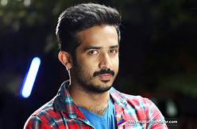
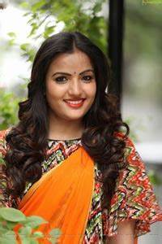

Anchor Ravi
 Anchor Ravi is an Indian anchor and video jockey (VJ). He was born on September 19 in Hyderabad, India. Anchor Ravi works mainly in the television and film industry Telugu. He is a Telugu VJ and Anchor raised in Hyderabad.Anchor Ravi has completed Bachelor of Arts then became a very talented Anchor in the Telugu industry. He has hosted several Telugu TV shows such as One Show, Dee Juniors, Cirque Family, Mondi Mogudu Penki Pellam, Kiraak and Ali Talkies. Ravi is married to a North Indian girl, Nitya Saxena and the couple has a daughter, Viya. He made a name on the small screen and is all set to hit the big screen.
Siri Hanumanth
As you, all know that Siri is the most pop ular Television Presenter and Actress and there are too many followers she has on her social profiles. In this blog, we bring the information about her personal life and her care details just like her family, Biography, Wikipedia, Husband/Boyfriend’s name, net worth income, and more details that you want to know. Sirisha Hanumanth was born on 2ed January 1996 in Visakhapatnam, Andhra Pradesh, India. By profession, she is an Indian TV & film actress. She completes her education from the local school & college of India. Her husband’s name is Shrihan. There is no information are available about her parents name. Siri Hanmanth Profession & Networth Income By profession, she is an Indian TV & film actress. Her Networth Income is Not Known
Sunny
Kalyana Vaibhogam Serial Hero Real name and photos Kalyan Vaibhogam serial Fame Real name is Sunny . Sunny is Indian Television actress who works for Television channels. he is one of the finest actors in the industry. We collected few pics of Sunny .Check her gallery below. Kalyana Vaibhogame Serial Story / Plot Zee Telugu channel telecast new serial Kalyana Vaibhogame, initially serial story starts with flashback part during raja period. The family is affected due to sin. The lead character played by Meghana Lokesh as city girl and village girl roles. As per the story heroine of the serial is the winner of Miss Hyderabad 2017 competition. The male character played by Sunny, he is running his father’s business and looking to improve his business to No 1 position.
Navya Swamy
Navya Swamy is an Indian Actress, who known for her works in Tamil, Telugu, and Kannada Television industry. She made her acting debut in the Kannada television serial “Thangali” along with Neelima Rani and Produced by Vikatan Televistas Pvt. Ltd. Her notable television serials are Thangali, Lakumi and Naa Peru Meenakshi. She currently doing the supporting role in Vani Rani serial along with Vignesh Kumar in Sun TV and leading role in ETV’s Naa Peru Meenakshi serial along with Madhu Sudhan. Check out below for Navya Swamy Wiki, Biography, Age, Husband, Serials, Images, and More. Navya Swamy Wiki Navya Swamy Details Navya Swamy was born on 17th March in Mysore, Karnataka, India. She attended Rotary West School and completed her schooling at Rotary High School, Mysore. She was Graduated from MMK and SDM College for Women in 2007. She made her acting debut in the Kannada television serial “Thangali“. She then got various opportunities to portray the lead roles in the daily soap operas. As far as her career in